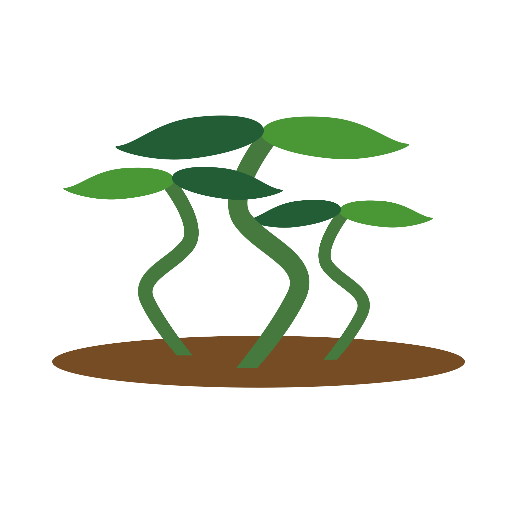

HANDIGE TUINIER TIPS
1 | DE JUISTE PLEK
Zorg voor een plek met zowel zon als schaduw, dit is een belangrijk balans voor planten. zorg ook dat de grond vlak is zodat het niet afstroomt en het water goed opgenomen kan worden door de planten.
2 | GOEDE GROND
Hark de aarde goed los en vul als het nodig is bij met tuinaarde. Begin pas met zaadjes planten als de grond niet meer bevroren of te vochtig is.
3 | BEMESTING
Bemesten kan het beste gedaan worden met compost wat je van je eigen groeten en fruit overblijfselen kan maken. Anders is organische bemesting uiteraard verkrijgbaar bij verschillende winkels.
4 | NIET TE DIEP ZAAIEN
Als je te diep je zaadjes zaait, is de kans op rotten groter. Zaadjes hoeven ook helemaal niet diep. Ongeveer de hoogte van het zaadje zelf is een mooie diepte om hem te planten.
5 | JUISTE MOMENT EN ONDERHOUD
Begin in de lente met zaaien, dit is de beste tijd voor de zaadjes om te ontkiemen en te groeien. Qua onderhoud moet je je tuintje goed bijhouden en onkruid meteen weghalen. Als het een langere periode droog is geweest zorg er dan voor dat je optijd water bijgeeft.